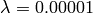

Using Bolt (CLI)¶
| Release: | 1.4 |
|---|---|
| Date: | September 05, 2010 |
This section shows how to use Bolt via its command line interface. First, we will introduce the CLI. Then, we will discuss the how to use Bolt via its CLI for a) binary and for b) multi-class classification.
Command Line Interface¶
Bolt provides a number of scripts which allow trainig, testing, and model selection from the command line.
Currently, the follwoing scripts are shipped with bolt:
- sb
- The main script of Bolt for training and testing.
- sb_cv
- A script for model selection using cross-validation.
- svml2npy
- A utility script to convert data files from textual (svm^light) to binary format.
For detailed information on the scripts see below or execute the script with the flag –help.
sb¶
Usage: sb [options] example_file
Bolt Online Learning Toolbox V1.4: Discriminative learning of linear models
using stochastic gradient descent.
Copyright: Peter Prettenhofer <peter.prettenhofer@gmail.com>
This software is available for non-commercial use only. It must not
be modified and distributed without prior permission of the author.
The author is not responsible for implications from the use of this
software.
http://github.com/pprett/bolt
Options:
--version show program's version number and exit
-h, --help show this help message and exit
-v [0,1,2], --verbose=[0,1,2] verbose output
-c CLSTYPE, --clstype=CLSTYPE Classifier type.
sgd: Stochastic Gradient Descent [default].
pegasos: Primal Estimated sub-GrAdient SOlver for SVM.
ova: One-vs-All strategy for SGD classifiers.
maxent: Maximum Entropy (via SGD).
avgperc: Averaged Perceptron.
-l [0..], --loss=[0..]
Loss function to use.
0: Hinge loss.
1: Modified huber loss [default].
2: Log loss.
5: Squared loss.
6: Huber loss.
-r float, --reg=float
Regularization term lambda [default 0.0001].
-e float, --epsilon=float
Size of the regression tube.
-n [1,2,3], --norm=[1,2,3]
Penalty to use.
1: L1.
2: L2 [default].
3: Elastic Net: (1-a)L1 + aL2.
-a float, --alpha=float
Elastic Net parameter alpha [requires -n 3; default
0.85].
-E int, --epochs=int Number of epochs to perform [default 5].
--shuffle Shuffle the training data after each epoche.
-b, --bias Use a biased hyperplane (w^t x + b) [default False].
-p FILE, --predictions=FILE
Write predicitons to FILE. If FILE is '-' write to
stdout [either -t or --test-only are required].
-t FILE Evaluate the model on a separate test file.
-m FILE, --model=FILE
If --test-only: Apply seralized model in FILE to
example_file.
else: store trained model in FILE.
--test-only Apply serialized model in option -m to example_file
[requires -m].
--train-error Compute training error [False].
More details in:
[Zhang, T., 2004] Solving large scale linear prediction problems using
stochastic gradient descent algorithms. In ICML '04.
[Shwartz, S. S., Singer, Y., and Srebro, N., 2007] Pegasos: Primal
estimated sub-gradient solver for svm. In ICML '07.
[Tsuruoka, Y., Tsujii, J., and Ananiadou, S., 2009] Stochastic gradient
descent training for l1-regularized log-linear models with cumulative
penalty. In ACL '09.
Examples:¶
Train binary classifier with SGD and modified huber loss on train.npy and test on test.npy:
$ sb train.npy -t test.npy
loading data ... [done]
---------
Training:
---------
-- Epoch 1
Norm: 28.39, NNZs: 41333, Bias: 0.000000, T: 781265, Avg. loss: 0.191140
Total training time: 0.65 seconds.
[...]
-- Epoch 5
Norm: 28.19, NNZs: 41520, Bias: 0.000000, T: 3906325, Avg. loss: 0.182684
Total training time: 3.07 seconds.
loading data ... [done]
--------
Testing:
--------
error: 5.5812
Total prediction time: 0.25 seconds.
Train binary classifier with SGD and modified huber loss on train.npy and save it to model.pkl:
$ sb train.npy -m model.pkl
loading data ... [done]
---------
Training:
---------
-- Epoch 1
Norm: 28.39, NNZs: 41333, Bias: 0.000000, T: 781265, Avg. loss: 0.191140
Total training time: 0.76 seconds.
[...]
-- Epoch 5
Norm: 28.19, NNZs: 41520, Bias: 0.000000, T: 3906325, Avg. loss: 0.182684
Total training time: 3.54 seconds.
sb_cv¶
Usage: sb_cv [options] example_file
Bolt Online Learning Toolbox V1.4: Discriminative learning of linear models
using stochastic gradient descent.
Copyright: Peter Prettenhofer <peter.prettenhofer@gmail.com>
This software is available for non-commercial use only. It must not
be modified and distributed without prior permission of the author.
The author is not responsible for implications from the use of this
software.
http://github.com/pprett/bolt
Options:
--version show program's version number and exit
-h, --help show this help message and exit
-v [0,1,2], --verbose=[0,1,2]
verbose output
-c CLSTYPE, --clstype=CLSTYPE
Classifier type.
sgd: Stochastic Gradient Descent [default].
pegasos: Primal Estimated sub-GrAdient SOlver for SVM.
ova: One-vs-All strategy for SGD classifiers.
maxent: Maximum Entropy (via SGD).
avgperc: Averaged Perceptron.
-l [0..], --loss=[0..]
Loss function to use.
0: Hinge loss.
1: Modified huber loss [default].
2: Log loss.
5: Squared loss.
6: Huber loss.
-r float, --reg=float
Regularization term lambda [default 0.0001].
-e float, --epsilon=float
Size of the regression tube.
-n [1,2,3], --norm=[1,2,3]
Penalty to use.
1: L1.
2: L2 [default].
3: Elastic Net: (1-a)L1 + aL2.
-a float, --alpha=float
Elastic Net parameter alpha [requires -n 3; default
0.85].
-E int, --epochs=int Number of epochs to perform [default 5].
--shuffle Shuffle the training data after each epoche.
-b, --bias Use a biased hyperplane (w^t x + b) [default False].
-f int, --folds=int number of folds [default 10].
-s int, --seed=int seed for CV shuffle [default none].
More details in:
[Zhang, T., 2004] Solving large scale linear prediction problems using
stochastic gradient descent algorithms. In ICML '04.
[Shwartz, S. S., Singer, Y., and Srebro, N., 2007] Pegasos: Primal
estimated sub-gradient solver for svm. In ICML '07.
[Tsuruoka, Y., Tsujii, J., and Ananiadou, S., 2009] Stochastic gradient
descent training for l1-regularized log-linear models with cumulative
penalty. In ACL '09.
Examples:¶
Perform 5-fold CV on train.npy using Logistic Regression and :
$ sb_cv train.npy -f 5 -l 2 -r 0.00001
loading data ... [done]
Fold Error
1 5.41
2 5.40
3 5.39
4 5.49
5 5.36
avg 5.41 (0.04)
svml2npy¶
Usage: svml2npy in-file out-file
Converts the svm^light encoded in-file into the binary encoded out-file.